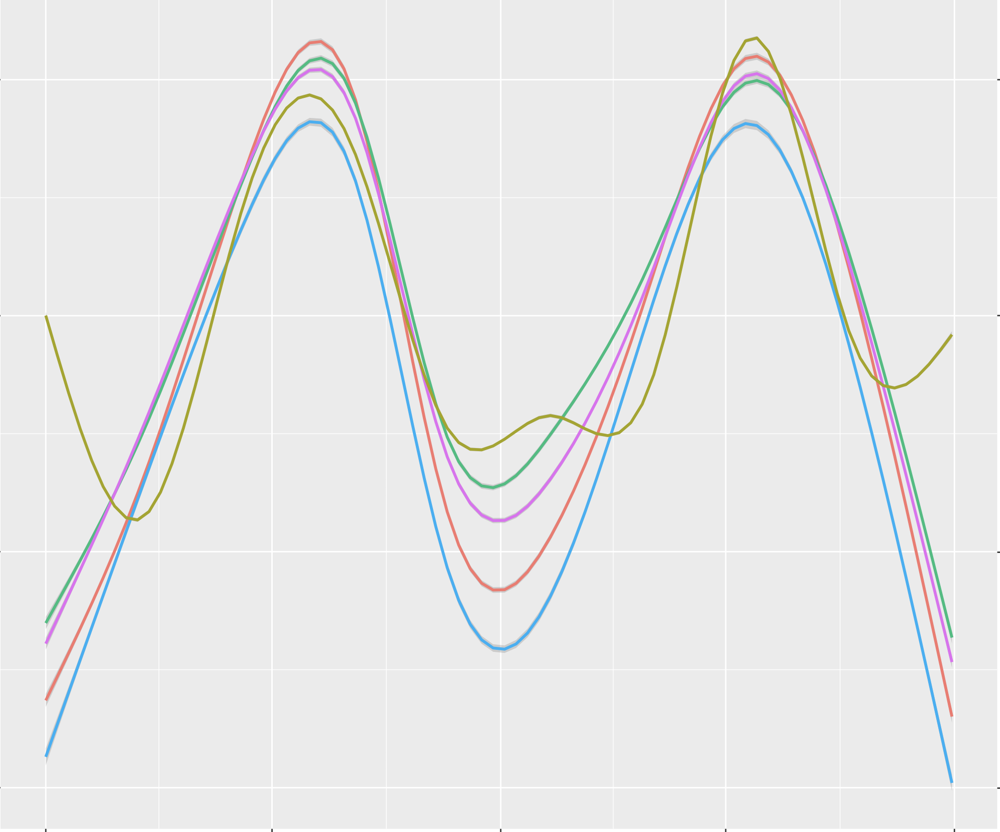

Recently Added Projects

Duke Summer Data Competition: Wind To Power

Autism Spectrum Disorder Predictor
I am Thomas Wileman, a Senior Data Scientist at Red Hat. I have found that thoughtfully crafting documents that summarize my study notes is an effective strategy to comprehending, critiquing, and eventually applying topics of interest. This site serves as a repository for my notes on data science topics ranging from Python, machine learning, statistics, and much more. My goal is not to impress you with tremendous cleverness by explaining each topic in the most difficult way. Instead, I aim to communicate each topic so it is easily understandable; to help me and you master fundamental and advanced topics.
Duke Summer Data Competition: Wind To Power
Autism Spectrum Disorder Predictor